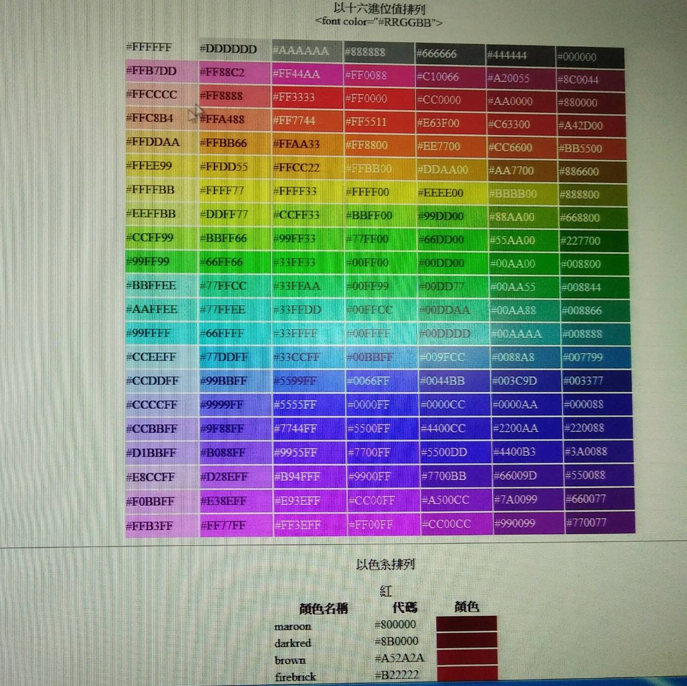

多媒體 多媒體的運用很廣泛，總讓人驚喜，學得很有趣， 雖然花很多時間但卻學得感覺很好， 這次學網頁語法的連結很不錯，至少是學習網頁連結的起點， 以後有空可以多學學。 經老師的指導，讓同學們學得快又有趣，大家都很認真的學習， 並也很快速地完成語法連結網頁， 可見同學對多媒體課程的熱度愛不釋手。  色碼表一系列排列讓人使用方便，豐富的色彩充滿喜悅。
多媒體的運用很廣泛，總讓人驚喜，學得很有趣， 雖然花很多時間但卻學得感覺很好， 這次學網頁語法的連結很不錯，至少是學習網頁連結的起點， 以後有空可以多學學。 經老師的指導，讓同學們學得快又有趣，大家都很認真的學習， 並也很快速地完成語法連結網頁， 可見同學對多媒體課程的熱度愛不釋手。
色碼表一系列排列讓人使用方便，豐富的色彩充滿喜悅。